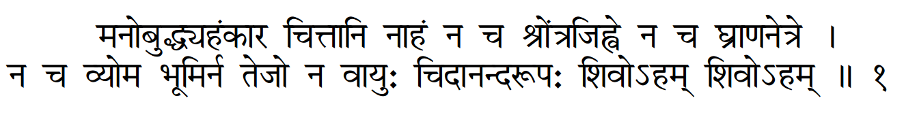

Shiv Shankar
Graduate Student
My research is centered around developing tools for reasoning and estimation for real-world applications. To this end I mostly work on machine learning and probabilistic models. I am also interested in grounding this research in real-world applications in sustainability and health-care.
personal info
name: Shiv Shankar


Who am i?

I am not
mind, soul, ego, memory ;
not in
ear, tongue, nose, eye ;
not the sky, earth, wind, fire.
I AM A FORM OF ETERNAL BLISS ;
I AM SHIVA I AM SHIVA
What do I do?
I currently play the role of a PhD student at the University of Massachusetts. I am also a member of the Machine Learning and Data Science Lab (MLDS). My research focuses on causality, variational inference and statistical estimation, with a focus on challenges of real-world applications. It also often overlaps with reinforcement learning and deep learning. My days are mostly packed with tasks and deadlines (which I inevitably miss) but I try to take out some time for meditation and mischief.
What do I like?
I am a big admirer of all scientific disciplines. I want to develop a decent level of understanding in all other scientific fields. I am also a strong advocate of environmental and social impact. Occasionally, I also take out time for enjoying random movies and useless debates about politics, philosophy, science and most importantly anime.
What I'm actually good at?
I think only others can give a fair answer to this question.